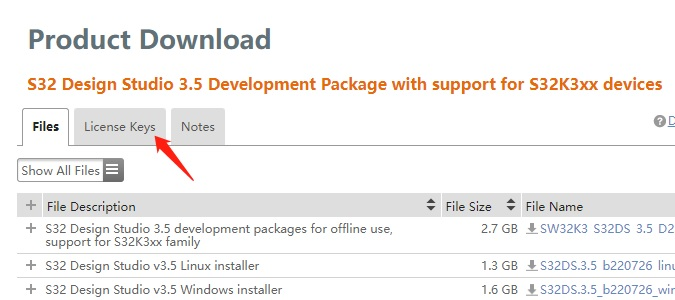

S32K342_S32K341_S32K322_IOMUX.xlsx
S32K344_S32K324_S32K314_IOMUX.xlsx
S32K3XX_100MaxQFP_98ASA01570D.pdf
S32K3XX_172MaxQFP_98ASA01107D.pdf
S32K3XX_172MaxQFP_EP_98ASA01667D.pdf
S32K3XX_257MapBGA_98ASA01483D.pdf
02 - S32K3x4_IBIS_172MaxQFP.zip
03 - S32K342_IBIS_172MaxQFP.zip
04 - S32K342_IBIS_100MaxQFP.zip
05 - S32K312_IBIS_172MaxQFP.zip

SW32_S32DS_3.5.8_D2311 提取码: 4f29
S32DS S32K3XX 开发插件 2311 提取码: sq4a
S32DS S32K388 开发插件 2303 提取码: db9k
SW32K3_S32M27x_RTD_R21-11_4.0.0_D2311_ReleaseNotes.pdf 提取码: 2zs7
SW32K3_S32M27x_RTD_R21-11_4.0.0_D2311_DS_updatesite.zip 提取码: ms7j
SW32K3_RTD_R21-11_3.0.0_P10_D2307.exe 提取码: jet8
SW32K3_RTD_R21-11_3.0.0_P10_D2307_ReleaseNotes.txt 提取码: i24p
SW32K3_RTD_R21-11_3.0.0_P07_D2306_DS_updatesite.zip 提取码: ghjr
SW32K3_RTD_R21-11_3.0.0_P07_D2306_ReleaseNotes.pdf 提取码: urew
SW32K3_FreeRTOS_10_5_1_UOS_3_1_0_DS_updatesite_D2304 提取码: i1h3
SW32K3_TCPIP_1_0_3_D2306_updatesite 提取码: 64ze
S32K3_SPD_1.0.3_DS_updatesite 提取码: ww12
S32K3_LINSTACK_RTM_2_0_3_D2304_updatesite ( remove S32M requirement ) 提取码: q33u